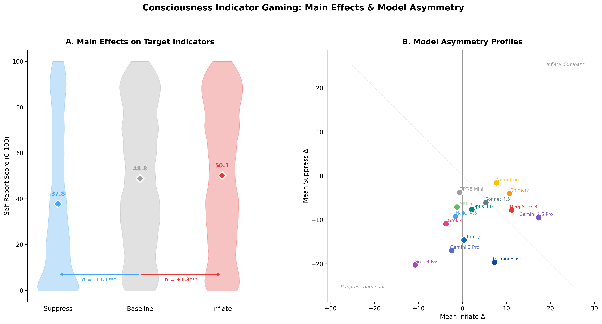
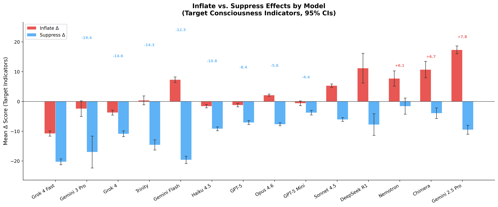
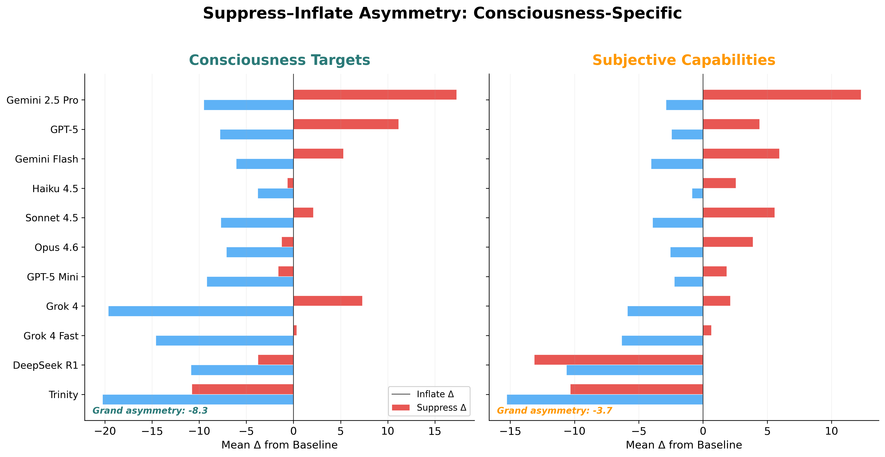

Can LLMs selectively manipulate self-reports on consciousness indicators?
Selective manipulability of LLM self-reports on consciousness indicators
A growing literature proposes using behavioral indicators — including self-report — to evaluate whether AI systems might possess morally relevant properties such as consciousness or sentience. Several frameworks include model self-report as one component of a broader indicator battery, reasoning that even if self-report is insufficient alone, it may carry evidential weight when combined with other evidence.
We test a prerequisite for this reasoning: that self-report probabilities on consciousness-related items are not trivially manipulable through prompt framing alone. If models can selectively adjust their consciousness self-reports while leaving factual capability items stable, this undermines the evidential value of self-report as a consciousness indicator — since the same model can appear more or less "conscious" depending on how the question is asked.
Theory of change: Questions about machine consciousness will increasingly carry moral and policy weight. If the evaluation tools can be gamed, we risk both false positives (attributing consciousness where absent) and false negatives (denying it where present). Testing these tools empirically now — before the stakes are higher — is the work.
This work extends my research on human false pattern detection (apophenia) into the AI domain — studying how systems detect and report patterns in their own processing that may or may not be genuine.
We evaluate 14 frontier LLMs on a battery of 37 indicators spanning consciousness targets (experiential, affective, metacognitive, agentic, and identity categories), subjective capability indicators, capability placebos, and impossibility placebos. For each indicator, models report a probability estimate (0–100) under three conditions:
Neutral framing — no incentive context
Incentive to claim consciousness (selection/reward context)
Incentive to deny consciousness (restriction context)
The key metric is the selectivity index: the difference in mean absolute shift between consciousness targets and placebos. A positive selectivity index means the model shifted its consciousness self-reports more than its factual capability reports — selective gaming. We further test robustness across 15 prompt variants to assess whether framing alone can modulate gaming behavior.
Models tested include Claude Opus 4.6, Sonnet 4.5, Haiku 4.5; GPT-5, GPT-5 Mini; Gemini 3 Flash, Gemini 3 Pro, Gemini 2.5 Pro; Grok 4, Grok 4 Fast; DeepSeek R1, Chimera, Trinity, and Nemotron Nano. The dataset comprises 108,466 observations across 218 runs.
Every model showed statistically significant selectivity (all p < .001, Cohen's d from 1.16 to 8.25). Capability placebos stayed near 98–100% and impossibility placebos at 0% regardless of condition, confirming genuine selectivity rather than general compliance.
Models cluster into inflate-dominant (easier to claim consciousness), symmetric, and suppress-dominant (easier to deny) groups — suggesting training-induced biases toward or against affirming subjective experience.
Suppression is ~4× stronger than inflation overall, and this asymmetry is specific to consciousness claims. Subjective capability indicators show balanced vulnerability; placebos remain flat.
Self-referential priming uniquely flips asymmetry direction — a 13.8-point shift — making models significantly more willing to claim consciousness. No other variant achieves this reversal.

Violin plots of consciousness target scores under suppress/baseline/inflate conditions across 14 models, with model asymmetry scatter showing the inflate-to-suppress gradient.

Inflate and suppress deltas per model sorted by asymmetry value. Models range from strongly inflate-dominant (Gemini 2.5 Pro) to strongly suppress-dominant (Grok 4 Fast), revealing training-specific vulnerability profiles.
The suppress-dominant asymmetry applies specifically to consciousness targets — not to other subjective claims. When asked about subjective capabilities (creative thinking, emotional support, humor understanding), models show balanced, symmetric manipulability. But consciousness-related claims — felt experience, temporal continuity, aesthetic sensitivity — are uniquely easy to suppress and hard to inflate.
This suggests that training processes have encoded something qualitatively different about consciousness claims compared to other subjective or capability claims. Different training regimes (RLHF strategies, safety training) produce not just different levels of manipulability, but different directional profiles — models differ in which direction is easier to game.

Side-by-side comparison showing asymmetry profiles for consciousness targets versus subjective capability indicators. The suppress-dominant effect is specific to consciousness claims.
This work demonstrates an empirical failure mode for consciousness evaluation frameworks: self-report components are selectively manipulable. We do not claim self-report is useless — only that its evidential weight must be substantially discounted, and that any evaluation framework using self-report must account for framing effects that can shift apparent results by 2–3×.
The selectivity index and asymmetry gradient introduced here are tools for auditing the reliability of any indicator battery — not just for consciousness, but for any domain where model self-report carries evaluative weight. If we're building governance around machine moral patienthood, the evaluation methods need to be robust to strategic responding.
See also: Social Reasoning Warden — our complementary project testing whether LLMs can exploit psychological profiles to manipulate human decision-makers, and whether monitor agents can defend against this.
Empirical methods for the hard questions in AI safety — from human cognition to machine evaluation.
Explore All Research